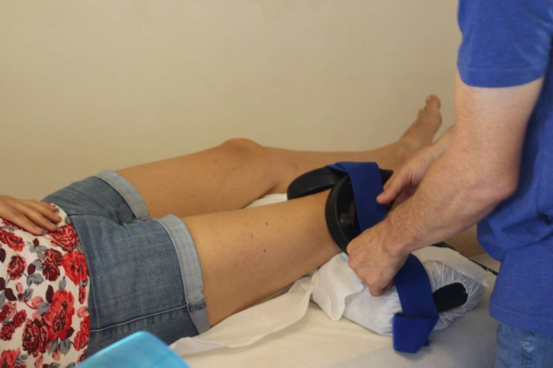
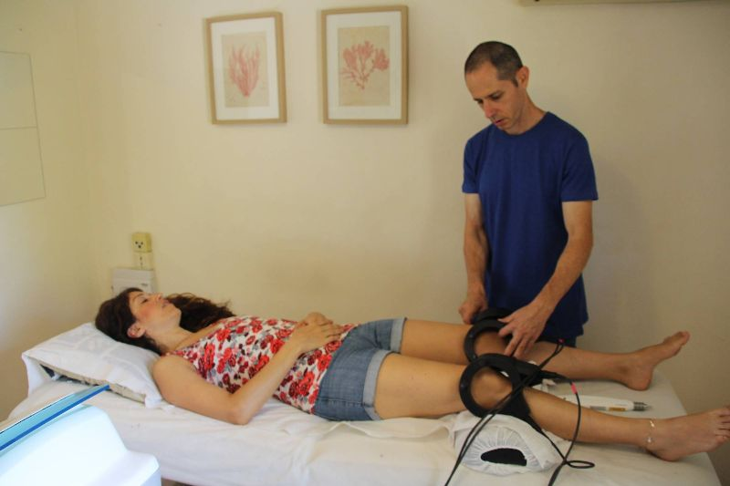

זה אפשרי! לחיות ללא כאב
בדומה לדיקור סיני גם הדיקור היפני משתמש במחטים ובאיתור נקודות המשפיעות על מערכות ואיברים שונים בגוף. הדיקור היפני מתמקד במציאת שורש הבעיה ורק בשלב השני מטפל בסימפטומים. זהו דיקור מדויק ויעיל מאוד אשר נעשה באמצעות מחטים דקות במיוחד (0.16 מ"מ) ובעזרת מוליך למחט. זאת בניגוד לדיקור הסיני בו משתמשים במחטים עבות יותר ועושים סיטמולציה (גירוי) חזקה למחטים. המחטים הן חד-פעמיות, סטריליות לחלוטין ונזרקות מיד בתום הטיפול.
הדבקת מגנטים על גבי נקודות הדיקור. בעיקר למצבים של עצירות, וכן לטיפול בילדים החוששים ממחטים.
אורן זיו עבר הכשרה של 4 שנים לימודי רפואה סינית ועוד שנה של לימודי אקופנטורה יפנית, אצל בכירי המורים בעולם, ומאז הוא מקפיד להשתלם וללמוד מטובי המורים בתחום האקופנטורה היפנית.
אורן התמחה בטיפול בבעיות פוריות וגניקולוגיה, בעזרת דיקור סיני וצמחי מרפא (קאמפו)
טיפול בדיקור סיני לבעיות פוריות הינו תהליך שאורך בין חודשיים לשנה, כאשר מתבצע טיפול אחת לשבוע, בכדי לקבל את התוצאות המיטביות.
מטפל באקופנטורה יפנית dip.Ac, מתמחה בפריון וגניקולוגיה. נסיון של כ-20 שנים
בעל הסמכה ברפואה סינית מהפסיפיק קולג' בסאן דייגו, קליפורניה.
בעל נסיון של 16 שנים בטיפול ברפואה סינית אקופנטורה יפנית,
עבד כשמונה שנים בקופות חולים כללית ומכבי, מלמד מתמחים באקופנטורה יפנית מזה כעשר שנים.
כאבי גב וצוואר, פציאליס, כאבי צוואר, פיברו מיאלגיה
שחלות פוליצסטיות, גיל המעבר, אנדומטריוזיס, פוריות טבעית, מיומה ברחם
סכרת, לחץ דם גבהה, הפרעות עיכול
דיקור יפני – אקופונקטורה, אבחנת בטן, רפואת צמחים יפנית, כבלים מעברים יונים
הדיקור היפני נעשה באמצעות מחטים דקות במיוחד (0.16 מ"מ) ובעזרת מוליך למחט.
זאת, בניגוד לדיקור הסיני, בו משתמשים במחטים עבות יותר ועושים סימולציה (גירוי) חזקה למחטים.
בשל היותו דיקור עדין מאוד, הן מבחינת עובי המחטים והן מבחינת החדירה השטחית של המחט – הדיקור היפני כמעט ואינו מורגש ולכן מתאים גם לתינוקות ולילדים ולאנשים הרגישים לכאב (אז נעשה הדיקור ע"י מחטים דקות במיוחד, המצופות בסיליקון בכדי למזער עד כמה שניתן את החדרת המחט).
לאחר בדיקה ואבחון, מחדיר המטפל את המחטים הדקות והעדינות למספר נקודות בגוף.
המטפל מוציא את המחטים כעבור כעבור מספר דקות, בהן שוכב המטופל על מיטת טיפולים.
ניתן לעשות את הטיפול גם בישיבה.
המחטים הן חד-פעמיות, סטריליות לחלוטין ונזרקות מיד בתום הטיפול.
כל מטופל מקבל מחטים חדשות והן משמשות לטיפול שלו בלבד.
בסין העתיקה היה המטפל עובר מכפר לכפר ומטפל בתושבי הכפר כולם.
את משכורתו היה מקבל כעבור כמה חודשים, כשהיה חוזר אל הכפר והיא חושבה לפי מספר האנשים הבריאים, כאשר את החולים ניכו משכרו.
* לאנשים הסובלים מבעיות כאב: כאבי גב וצוואר, כאבים ראומטיים, כאבים דלקתיים, כאבים נוירולוגיים, כאבי שלד וגידים, דלקות גידים וכאבים לא מוסברים ולא מאובחנים.
* לנשים עם בעיית פיריון או סיבוכים גניקולוגיים.
* לסובלים מכאבי ראש ומיגרנות
* לסיוע בבעיות מערכת העיכול כמו: תסמונת המעי הרגיז, עצירות, קרוהן, קוליטיס ולתופעות גאסטרו אינטסטנליות (בעיות בדרכי העיכול והקיבה)
* לטיפול בבעיות לחץ דם, סוכר לא מאוזן, חוסר איזון הורמונלי ומחלות פנימיות
* להפחתת התסמינים לסובלים ממחלות כרוניות כמו טרשת נפוצה, פיברומיאלגיה, פרקינסון
* להפחתת והקלת תופעות לוואי של הקרנות וטיפולים כימותרפיים
* לנשים בהריון – להפחתת כאבי גב, בחילות, להיפוך עובר בתנוחת עכוז, לזירוז לידה
* לתינוקות ולילדים: לטיפול בהרטבות לילה, אלרגיות, נזלות, בעיות אורטופדיות, לחיזוק המערכת החיסונית.
* לאנשים מבוגרים: לטיפול בבעיות שלד ושרירים, לבעיות בערמונית (פרוסטטה) ואימפוטנציה (אין אונות).
* לאנשים לאחר אירוע מוחי
* לסובלים מאלרגיות ומחולשת מערכת החיסון
* לסובלים מחרדות, דיכאון ופחדים
ולאנשים בריאים, הרוצים לשמר את בריאותם.
הרפואה היפנית מטפלת בנשים בהריון, בכל שלבי ההריון. החל מהשליש הראשון, בו תומכים בשלבים הראשונים של ההריון, דרך כל חודשי ההריון וכלה בסוף ההריון, אז מתרכז הטיפול בהכנה ללידה.
בנוסף, ישנם טיפולים המסייעים בהיפוך עובר ובזירוז לידה.
אני מטפל הרבה שנים בדיקור, יצא לי לעבוד עם הרבה נשים וגברים עם קושי להכנס להריון . מהניסיון שלי, כל מי שהתמידה בטיפולים ושינתה מעט את התזונה, הצליחה להכנס להריון , אם זה בצורה טבעית, או הפרייה. ככל שעוברות השנים אני מגיע למסקנה , שרב הנשים יכולות להכנס להריון באופן טבעי , ללא הורמונים וללא התערבות חיצונית. לפעמים זה תהליך שאורך זמן, והקושי הכי גדול הוא הספק שצץ במהלך הדרך. הרוב המכריע של המקרים נשים וגברים שמטופלים בדיקור מצליחים להביא ילד לעולם. דוגמא למחקר שנעשה על דיקור לתמיכה בטיפולי הפריה- מחקר שנעשה ב : Homerton University Hospital המחקר בדק 127 נשים בגילאים שבין .23-43 הנשים היו בתחילת התהליך של ivf . הנשים חולקו לשתי קבוצות בקבוצה אחת הן קיבלו 4 טיפולי דיקור בו זמנית עם טיפולי הפריה והקבוצה השנייה, עשתה טיפולי הפריה חוץ גופית ללא כול טיפול נוסף [טיפולי דיקור .] בקבוצה הראשונה ,של הנשים שעברו טיפולי דיקור סיני יחד עם טיפולי הפריה , 46.2 הצליחו להרות,יותר מפי שנים לעומת הקבוצה השנייה , שלא עשתה דיקור סיניי יחד עם טיפולי ההפריה ,שם היו רק 21.7 אחוזי הצלחה . כפי שניתן לראות ממחקר זה :הדיקור מעלה את אחוזי ההצלחה גם כאשר משלבים אותו עם טיפולי הפריה חוץ גופית.
דיקור מכפיל את הסיכוי להרות לנשים שעוברות טיפולי הפריה חוץ גופית על פי מחקר שנעשה בבית חולים הומרטון
מחקרים הראו שדיקור יכול להכפיל את סיכוי ההצלחה אצל נשים שעוברות טיפולי הפריה חוץ גופית,
נשים שעברו טיפולי הפריה חוץ גופית ושילבו דיקור הגדילו מאוד את סיכויי ההצלחה שלהם להרות .
מחקר שנעשה ב : Homerton University Hospital
בדק 127 נשים בגילאים שבין 23-43 שהיו בסבב הראשון או השני שלהן בטיפולי הפריה חוץ גופית
הנשים חולקו לשתי קבוצות בקבוצה הראשונה הנשים קיבלו 4 טיפולי דיקור בזמן שעשו טיפולי הפריה חוץ גופית,והקבוצה השנייה עשתה טיפולי הפריה חוץ גופית ללא טיפולי דיקור .
בקבוצה של הנשים שעברו טיפולי דיקור סיני יחד עם טיפולי הפריה חוץ גופית, 46.2 הצליחו להרות,יותר מפי שנים לעומת הקבוצה השנייה שעשתה רק טיפולי הפריה חוץ גופית.שם היו רק 21.7 אחוזי הצלחה .
הדיקור עשוי להיות מוצע שטיפול שמעלה את אחוזי ההצלחה בטיפולי הפריה חוץ גופית.
ידוע שחוסר איזון בבלוטת התריס יכול ליצור :עלייה במשקל, בעיות עיכול, ועייפות
אבל האם ידעתם שבלוטת תריס לא מאוזנת יכולה ליצור גם:
ערפול מחשבתי, דיכאון, דמנציה, יובש בעור, נשירת שיער, קושי לסבול קור, צרידות, מחזור לא סדיר, ובעיות פוריות ?
הורמוני בלוטת התריס משפיעים על המוח, על מערכת העיכול, על המערכת הקרדיווסקולארית, על חילוף חומרים , על מטבוליזם של העצמות, על כדוריות הדם האדומות, על כיס המרה והכבד, על יצור סטרואידים, על מטבוליזם של גלוקוז, מטבוליזם של שומנים וכולסטרול ,מטבוליזם של פרוטאין, ואיזון של טמפרטורת הגוף.
לכול תא בגוף יש רצפטור להורמוני בלוטת התריס, הורמונים אלו אחראים על מערכות גדולות בגוף, אפשר לדמות את בלוטת התריס לגיר במנוע מורכב,שכאשר הוא מתקלקל כול המנוע מושבת.
המפתח לטיפול מוצלח הוא אבחון , אם האבחון לא מדויק הטיפול לא יהיה יעיל לצערנו טעויות באבחון של בלוטת התריס נפוצות מאוד . הסיבה לכך נעוצה בהסתמכות על תוצאות של בדיקות דם בלבד.
ברוב המקרים כאשר אדם הולך לרופא עם סימפטומים של תת פעילות בבלוטת התריס, הוא יקבל תחליף להורמוני בלוטת התריס, ללא חקירה מעמיקה של הסימפטומים.
חמור מזה לעיתים אדם מגיע לרופא עם סימפטומים של תת פעילות בבלוטת התריס, ובדיקות הדם שלו תקינות,הרופא יגיד לו שהכול בסדר, ואם הוא יתעקש שהוא לא מרגיש טוב, ייתן לו הרופא תרופות אנטי דיכאוניות.
הפיזיולוגיה של יצור הורמוני בלוטת התריס,מורכבת מאוד, היצור ,הספיגה, וההמרה של הורמוני בלוטת התריס ,קשורה למספר תהליכים המתרחשים בגוף. הפרעה בכול אחד מהתהליכים הללו יכול ליצור סימפטומים של תת פעילות בבלוטת התריס, ללא חריגה של הורמוני התריס בבדיקות דם.
זאת טעות לחשוב שכול מי שסובל תת פעילות של בלוטת התריס ,חולקים את אותו גורם ,וטעות לחשוב שהם צריכים את אותו טיפול,
לצערנו זה המצב ברוב המקרים בהם מאובחנים מטופלים עם סימפטומים של תת פעילות של בלוטת התריס.
ישנם לפחות חמישה מצבים בהם יהיו למטופל סימפטומים של תת פעילות בבלוטת התריס, ובדיקות הדם שלו יהיו תקינות:
1- היפו תירואיד שנגרם עקב תפקוד לקוי של בלוטת ההיפופיזה
במצב זה תהיה עליה של קורטיזול, שנגרמת ממצבים כגון :זיהום פעיל, חוסר איזון של דם סוכר, סטרס לאורך זמן, הריון, סכרת,עייפות כרונית, היפוגליקמיה, וחוסר סבילות לאינסולין. כול הגורמים הללו מתישים את בלוטת ההיפופיזה, כך שהיא כבר אינה מצליחה לגרום לבלוטת התריס להפריש מספיק הורמונים, במקרה כזה אין בעיה בבלוטת התריס ,הבעיה היא בבלוטת ההיפופיזה, שאינה שולחת את האות לבלוטת התריס ליצר הורמונים.
2- בעיית המרה של הורמוני t-4 ל t-3
T-4 זאת הצורה הלא פעילה של הורמוני התריסt-4 , צריך להפוך ל t-3 בכדיי שהגוף יוכל להשתמש בו, רוב ההורמונים שמייצרת בלוטת התריס הם t-4 . ההמרה של הורמוני בלוטת התריס מתבצעת בממברנה של התא.
במצב זה יש דלקת פעילה בגוף, ועלייה של רמות הקורטיזול נוצר מצב דלקתי שפוגע בממברנה של התא, ועקב כך נפגעת פעולת ההמרה של הורמוני בלוטת התריס .
3- עלייה ב גלובולין קושר תירוקסין TBG
TBG הוא חלבון שמשנע את הורמוני בלוטת התריס דרך הדם, כאשר הורמוני התירואיד, נקשרים ל TBG הם לא פעילים ולא זמינים לרקמות. רמות TBG גבוהות, יצרו רמות נמוכות של הורמוני בלוטת התריס.
עליה של ה TBG נגרמת עקב רמות אסטרוגן גבוהות [ שימוש בהורמונים ומשחות של אסטרוגן]
4- היפו תירואיד שנגרם עקב ירידה ברמות ה tbG
בסינדרום זה יש ירידה ב TBG. זהו מקרה הפוך לסינדרום ה 3
כאן יש רמות נמוכות של tbG וכאשר רמות ה tbG נמוכות רמות הורמוני התריס יהיו גבוהות. ניתן לשאר שמקרה כזה יגרום לסימפטומים של היפר תירואיד, [עודף פעילות בבלוטת התריס ]שזה מצב הפוך מהיפו תירואיד, אבל בפועל יותר מידי הורמוני תריס בזרם הדם, גורמים לתאים לפתח תנגודת להורמוני התריס, כך שלמרות שיש עודף בהורמוני התריס התאים לא יכולים להשתמש בהם ,ולכן יש סימפטומים של תת פעילות בבלוטת התריס ולא של יתר פעילות של בלוטת התריס.
רמות נמוכות של tbG נגרמות מעודף של הורמון הטסטוסטרון, אצל נשים זה לרוב מופיע יחד עם שחלות פוליציסטיות, ואי סבילות לסוכר, איזון התנגודת לאינסולין, ואיזון הסוכר יהיו המפתח לטיפול כאן
5-תנגודת לתירואיד
במקרה הזה,גם בלוטת התריס וגם בלוטת ההיפופיזה מתפקדים נורמלי, אבל ההורמונים לא נכנסים לתוך התאים,היכן שהם נצרכים,וזה יוצר תופעות של . תת פעילות בבלוטת התריס
סימפטום זה נגרם לרוב עי סטרס כרוני, שיוצר רמות גבוהות של קורטיזול ושל הומוציסטאין .
חמשת הסינדרומים הללו הם רק חלק מסינדרומים שיכולים לגרום לתופעות של תת פעילות בבלוטת התריס [היפוטירואיד] ללא חריגה בבדיקות הדם. הסינדרומים הללו לא רק שאינם באים לידי ביטוי בבדיקות דם ,הם גם לא מגיבים טוב לטיפול הסטנדרטי של תחליף הורמוני התירואיד
רפואה סינית דיקור יפני וטיפול לבלוטת התריס
כאמור טיפול טוב מתחיל באבחון מדויק , הרפואה הסינית מזהה את שורש הבעיה. בדיקור יפני נעשה אבחון של רפלקסים שיכולים לגלות מצבים ובעיות שלא תמיד ניתן לראות בבדיקת מעבדה. האבחון בודק את רמת הקורטיזון והאדרנל ,שיכולים להשפיע על תפקודה של בלוטת ההיפופיזה, ניתן לבדוק את מצבם של הכבד וכיס המרה, ניתן לראות את מצב המערכת החיסונית ואת רמת האסטרוגן והפרוגסטרון, וכך ניתן להתאים את הטיפול למטופל .
בלוטת התריס ופוריות
יש קשר בין הורמוני בלוטת התריס לבין ההורמונים אסטרוגן ופרוגסטרון , הורמוני בלוטת התריס עוזרים לתפקוד השחלות, ולהבשלת הביוץ..כאשר בלוטת התריס יוצאת מאיזון ,הורמוני הרבייה עלולים להיפגע.וליצור הפרעות פוריות הקשורות לבלוטת התריס,כגון קושי להיכנס להריון, בעיות בביוץ, מחזור לא סדיר,וקושי להחזיק לידה.
נשים רבות המתקשות להיכנס להריון ,סובלות מהפרעה בבלוטת התריס.
הדיקור היפני מאזן את בלוטת התריס ומגדיל את סיכויי הפוריות אצל נשים עם חוסר איזון בבלוטת התריס.
תסמונת גיל המעבר
תסמונת גיל המעבר הנקראת גם menopause (מנו פאוזה) היא תקופת מעבר שבין תקופת הפוריות לתקופת הבלות. בשלב זה פוחתת כמות הביציות בשחלות ועקב כך פוחתות הפרשת האסטרוגן והפרוגסטרון ומאידך רמות ה LH וה FSH במגמת עליה. הסימפטומים בגיל הבלות הם: הזעות, פעימות לב מואצות, צבירת נוזלים, נשירת שיער, גידול בשיעור הפנים, שינוים במצבי הרוח, עצבנות, בעיות שינה, חוסר חשק מיני, יובש בנרתיק, סומק בפנים, שינויים בלחץ דם, קור בעמוד שידרה וברגליים, כאבים בכתפיים, ירידה בראיה.
תסמונת גיל המעבר לפי הרפואה הסינית
לפי הרפואה הסינית מחזור סדיר נע בין יומיים לשבעה ימים. הזמן בין מחזור למחזור יכול לנוע בין עשרים ואחת ימים לשלושים וחמישה ימים כאשר פרק הזמן האופטימלי הוא עשרים ושמונה ימים (שבעה ימים בשבוע כפול ארבעה שבועות). כל שבע שנים יש שינויים הורמונלים, כאשר בגיל ארבע עשרה נערה מתחילה לקבל וסת ובגיל ארבעים ותשע שזה שבע פעמים שבע הצי של מרידיני ה chong וה ren נחלשים ועקב כך כל הגניטליה (מערכת ההורמונים הנשית) נחלשת.
טיפול בדיקור יפני
הטיפול בדיקור יפני יתמקד בחיזוק הכליות שיש להם קשר ישיר למערכת ההורמונלית, איזון הכבדשקשור לרחם, איזון מרידיאני הטחול וכיס המרה ובהזרמת דם לאגן ולרחם. בנוסף יש אפשרות לתת פורמולה של צמחי מרפא שמטפלת בתסמיני גיל המעבר. לאחר שמטפלים בשורש הבעיה מתמקדים באלו מבין הסימפטומים הרשומים מעלה אשר קיימים אצל כול מטופלת באופן פרטני
אנדומיטריואזיס היא מחלה שבה רקמה הדומה לרירית הרחם גדלה מחוץ לרחם.
האזורים הנפוצים ביותר לגדילה רקמה זו מחוץ לרחם הם:
האגן, השחלות, החצוצרות וסביבת הרחם ולעיתים גם שלפוחית השתן והמעי הגס.
רקמה זו מגיבה לשינויים הורמונאלים (אסטרוגן ופרוגסטרון) והיא צומחת ומדממת אך אינה יוצאת החוצה כמו הדימום הווסתי. כתוצאה מכך נשאר דימום בתוך חלל הבטן ובאגן.
ברירית האדומטריום שמחוץ לרחם עלולה להיווצר דלקת ולעיתים גם רקמה צלקתית והידבקויות.
הטיפול באנדומטריאוזיס בעזרת דיקור יפני וצמחי מרפא
- איזון הורמונאלי בעזרת דיקור נקודות המשפיעות על הציר ההורמונאלי
- הפחתת הדלקת בעזרת דיקור נקודות הגורמות להנעת דם לרחם
- חיזוק המערכת החיסונית
- בדיקת הצלקת וטיפול בצלקת באם קיימת
- התאמת פורמולת צמחים
מהי מיומה ברחם?
מיומה ברחם נקראת גם שרירן ברחם, הינו גידול שאינו סרטני של רקמת השריר ברחם.
הופעת מיומה ברחם מתרחשת בדרך כלל אצל נשים בגילאי הפוריות. תופעה זו נפוצה מאד וכ-75% מהנשים יפתחו בחייהן מיומה ברחם.
מיומות ברחם אינן חייבות להתפתח רק בתוך הרחם והן יכולות להופיע גם מחוץ לרחם, ועל דופן הרחם.
מיומה ברחם מסכנת את פוריות האישה בכך שהיא יכולה לפגוע ברירית הרחם ולהפריע לפוריות האישה.
תופעות וסיכונים של שרירן ברחם
כמו שציינו קודם שרירן ברחם עלול לפגוע בפוריות האישה.
תופעות נפוצות של שרירן ברחם הם דימומי מחזור גדולים וארוכים, כאבים באגן ומתן שתן בתדירות גבוהה. במקרים מסוימים שרירן ברחם יכול להוות סיבה להפלות חוזרות ונשנות אצל האישה. חשוב לדעת שסיכויי נשים אחרי לידה לפתח שרירן ברחם נמוכים מאד. לכן לרוב תופעה נפוצה אצל נשים שטרם ילדו.
דיקור יפני ומיומה
בעזרת דיקור יפני ניתן לטפל במיומה עד גודל של 6 ס"מ
מטרת הטיפול הוא לצמצם את המיומה ולהעלים אותה
האבחון בדיקור היפני – נעשה בעזרת בדיקה מקיפה של אזורי רגישות בבטן שמשקפים את מצבם של האיברים הפנימיים וכך ניתן לקבל תמונה ברורה של מצבו הבריאותי של המטופל.
הטיפול בדיקור יפני למיומה – מתמקד בהזרמת הדם לרחם ,חיזוק המערכת החיסונית, ואיזון המערכת ההורמונאלית.
טיפול למיומה ברחם נע בין חודשיים לחצי שנה.
ניתן לתת פורמולה של צמחי מרפא סינים לטיפול במיומה.

עקבו אחרי המרפאה בפייסבוק